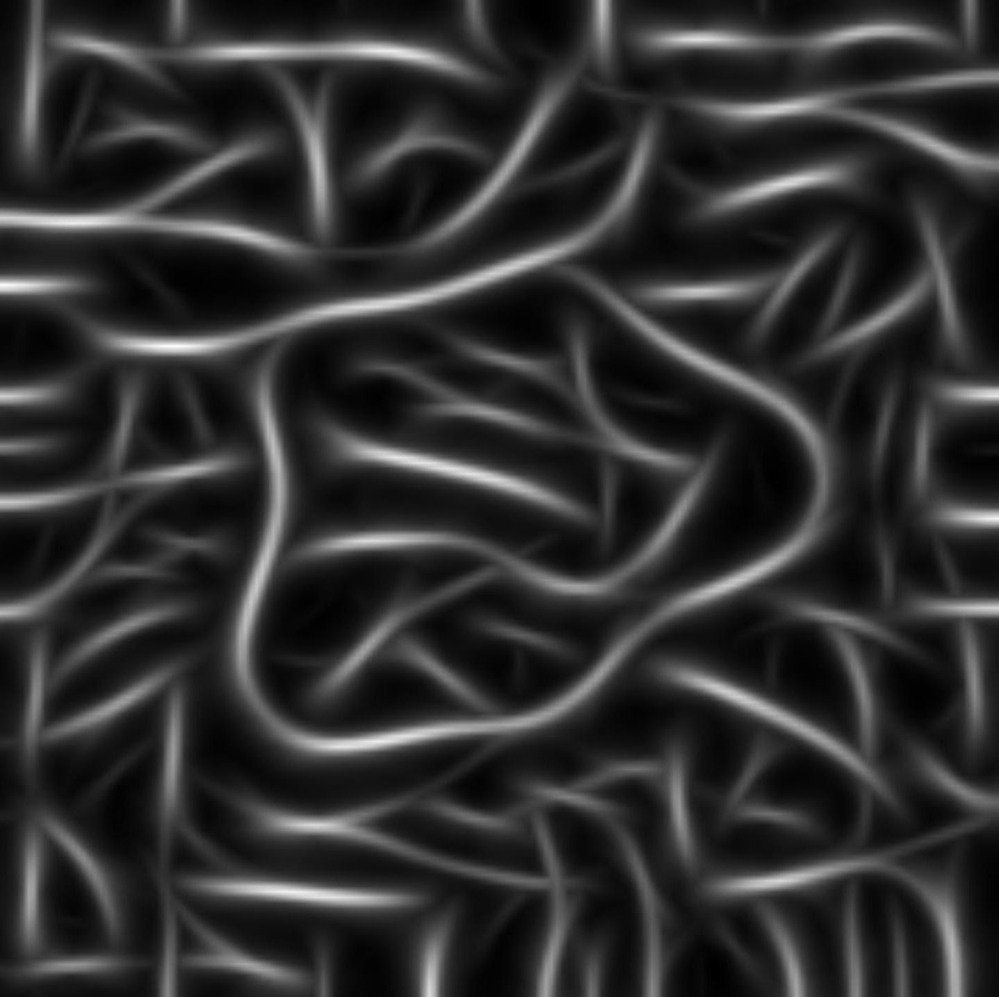
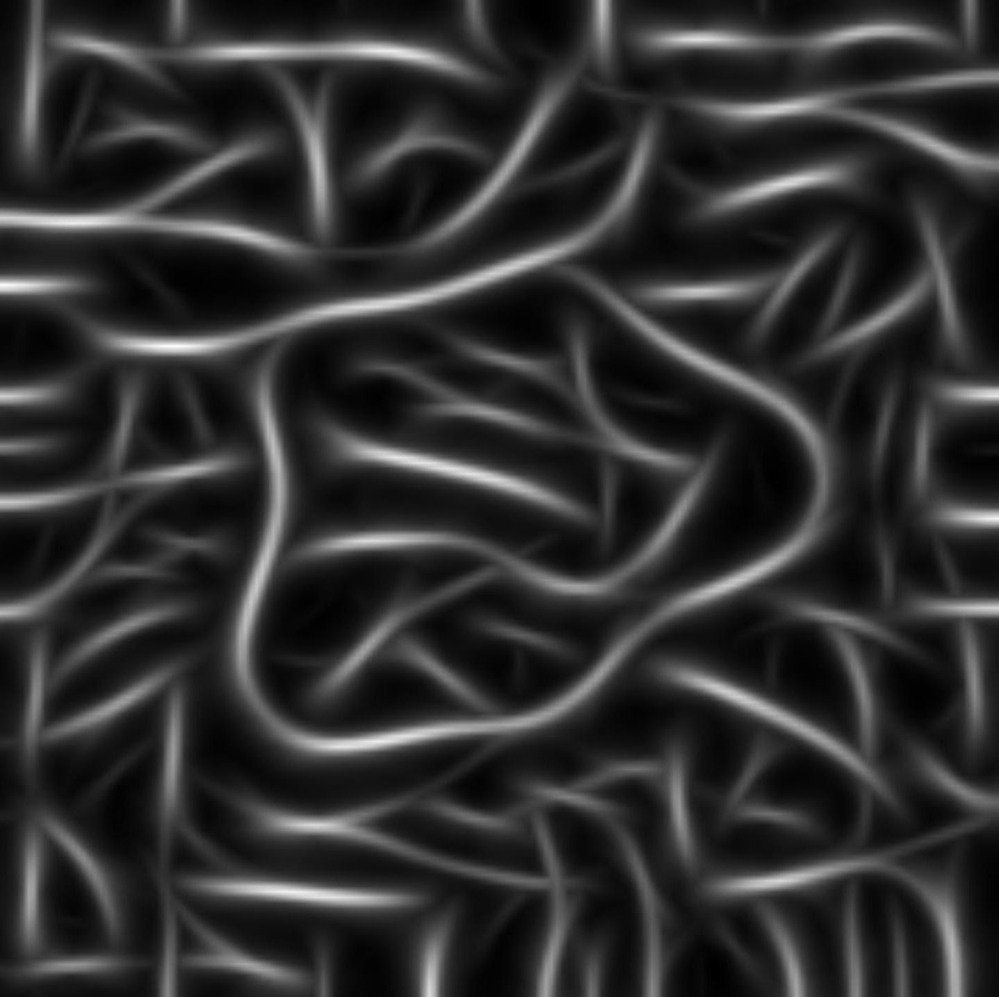

estetinis grožis

Paveikslėlių klasifikavimas: demo
GoogLeNet (deep network): 6,67% klaidų
Žmogus (Andrej Karpathy): 5,1% klaidų
Estetinis pasitenkinimas gali būti gana objektyvus (visiems bendras) rodiklis, panašiai, kaip skonis ar kvapas.
pvz., netikėtai lašiniais aptekus mašina
arba netikėta šokoladinė teroristė
trivialus metodas: kiek pažįstamas yra kūrinio pavadinimas ar tematika
pavyzdžiui, kaip dažnai literatūroje randama frazė „fat car“?
"fat + daiktavardis" ARBA "daiktavardis + car": 5.02*10^-4
"fat car": 4,09*10^-8
t.y., "fat car" yra vos 1 iš 12 tūkstančių frazių
kai kurie kūriniai yra įspūdingi vien dėl savo dydžio, sunkiai valdomų medžiagų panaudojimo, įdėtų pastangų.
 


ready-mades, found objects:
I began an AfricAmerican yellow pages to simply help minority-owned enterprise in nearby areas. Now add flour and milk and mix till a mixture gets shaped. —yellowpages.aol.com